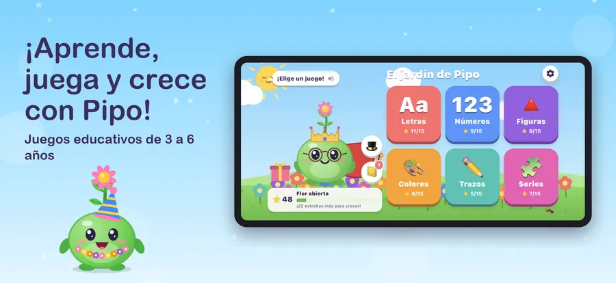
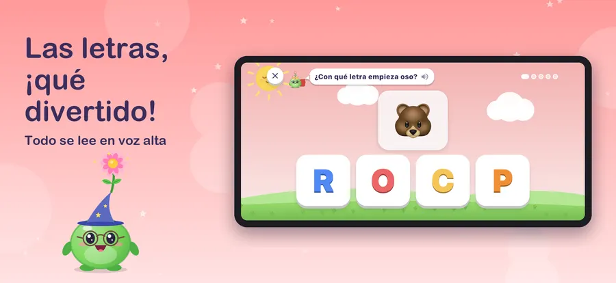
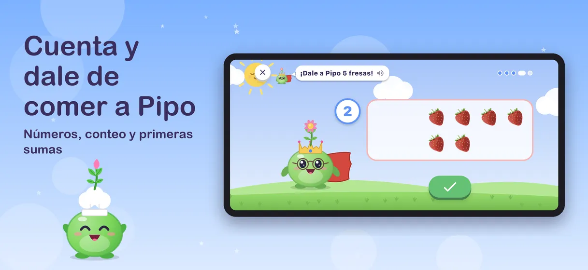
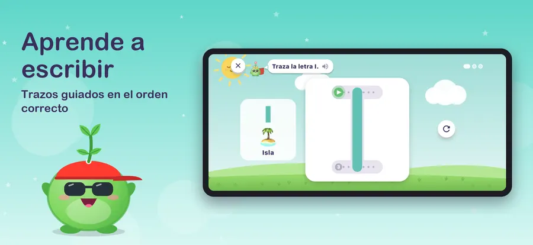
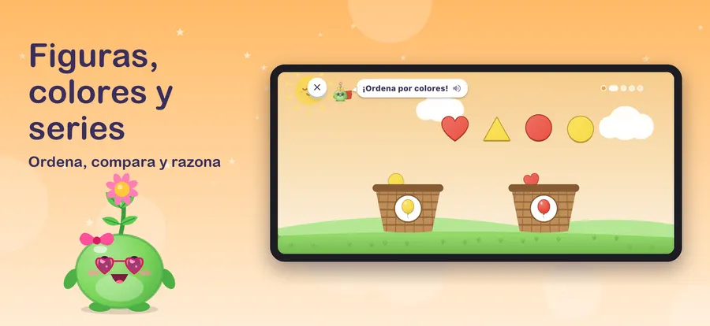
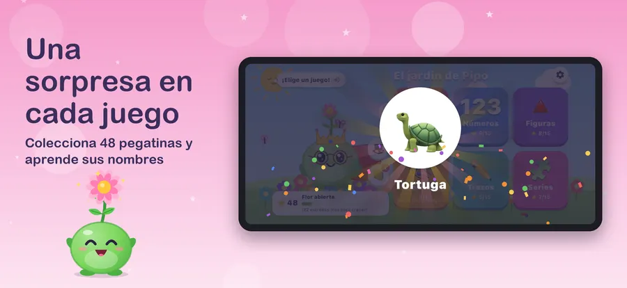
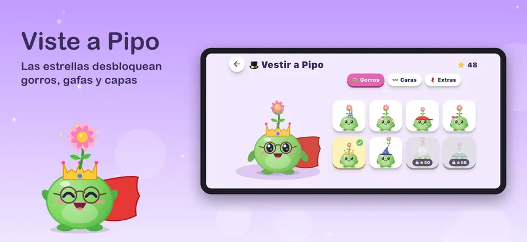
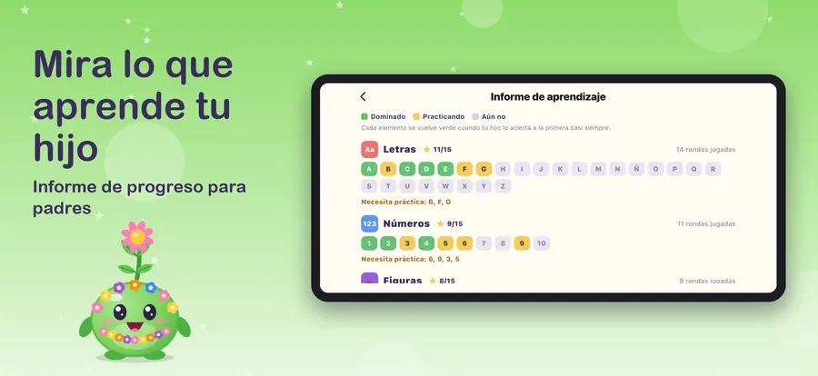
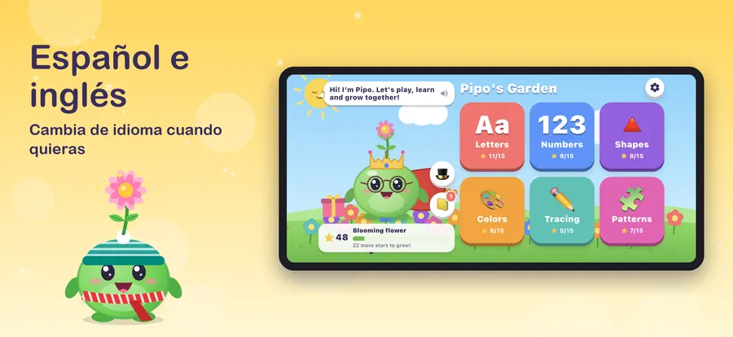

Pipo's Garden
Edad 3–6Ayuda a Pipo, una pequeña semilla, a convertirse en flor. Actividades de preescolar con letras, números, figuras, colores, trazos y series, en español e inglés.








